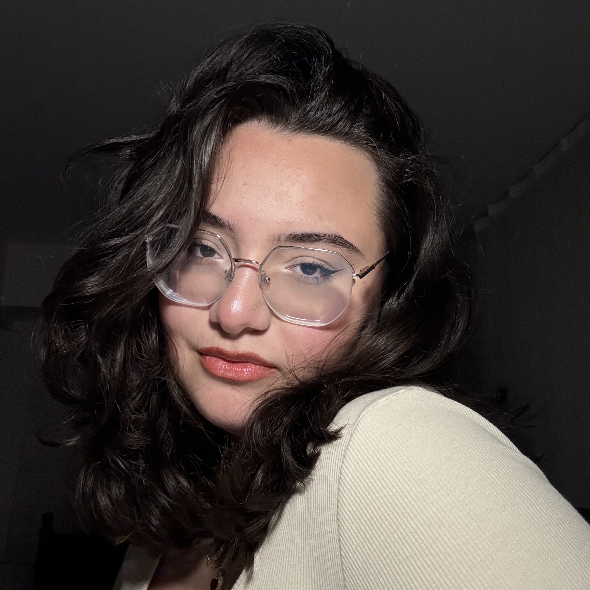

HAKKIMDA

Selam, Ceylan ben.
Okurlarım genelde cey der.
Dürüst olmak gerekirse kendimden bahsetmem gereken bu yazıyı yazmakta oldukça zorlanıyorum. Bu nedenle olabildiğince kısa keseceğim :)
13 Kasım 2006’da Tatvan’da doğdum, Bitlis’in bir ilçesinde. Birçok şehri görerek büyüsem de karakterimin şekillendiği yıllarda Karadeniz’in kalplerinde dolaştım. Lise eğitimimi Rize’de tamamladıktan sonra İstanbul’a taşındım ve şimdi de Kocaeli Üniversitesi’nde endüstri mühendisliği okuyorum.
Hakkımda söyleyebileceğim materyal bilgiler bunlarla sınırlı. Kısaca bu sitenin açılmasına vesile olan kitaplarımla, benim nasıl tanıştığımdan bahsedeyim.
28 Şubat 2024.
Günlerce aklımda dolanan, iki kişinin yıllar sonra karşılaşıp birbirlerine “neden” diye sorduğu o pasajı yazmamak için dirensem de en sonunda “yazayım ve bitsin” düşüncesiyle parmaklarımın oda arkadaşımın bilgisayar klavyesinde bir akşam vakti dolaşmasıyla başladı.
Biter sandığım hesaplaşma bitmedi. Aklımda dönüp durdular. Bir karakterden çok daha fazlasına dönüştüler. Dertlerini dinlediğim bir arkadaş, tedavisine yardımcı olmaya çalıştığım bir danışan, sokakta ağlarken gördüğüm için üzüldüğüm öylesini biri gibi.
Günlükler, yalnızlığımı paylaştığım defterler, karaladığımı düşündüğüm birkaç mısralık şiirler yerini aklımda ve kalbimde kendilerine yer bulan, beni seçen insanların hikayelerine dönüştüler.
Şimdilerde anlıyorum başlarda yazmaktan bu kadar korkmamın sebebi onların hikayesini onlara layık yazamamaktan çekinmemdi. Sanırım anlaşılmamak bir noktaya kadar canımı o kadar acıttı ki aynısını kalbimde yaşattığım onlarcasına hissettirmekten korktum.
Her biri hayatımdan ve çevremdeki hayatlardan kopup ortak bir ruhta birleşmişti.
Gerçek değiller, biliyorum.
Ama gerçeği yansıtıyorlar.
Yıllarca yazdım ama yazan biri olduğumu kabul etmek de yıllarımı aldı. Burası benim için güvenli bölgelerimden biriydi. Ne zaman dünya üzerinde benim için artık gerçekten güvenli bölge kalmadı o zaman o kitaplarımın kapısını sizlere araladım. Bazılarınız şöyle bir kapıdan baktı, bazılarınız içeri girdi, bazılarınız için her biri tıpkı benim oldukları gibi sizin de dostunuz oldu.
Ölüm beni en değerlimden vurduğunda beni hayatta tutan tek şey yazmak oldu. Onların hikayesini anlatmak benim için sanki bir sorumluluk haline geldi. Onlar vesilesiyle aslında kimi anlatmak, kimi anlaşılır kılmak istedim henüz bu soruyu cevaplayamadım.
Hep söylerim, bazen yaptığın ufacık bir şeyin başka bir insanda ne kadar büyük bir etki yaratacağını tahmin bile edemezsin. İyi ya da kötü…
Sadece okuduğunuzu düşünüyorsanız lütfen bunun yanında hayatta kalmaya çalışan 17 yaşında bir genç kızın elinden tuttuğunuzu da hatırlayın ve bence bununla gurur duyun. Bu benim için gerçekten çok özeldi ve son nefesime kadar minnettar kalacağım.
Ve bundan sonra kapıdan içeri girmeyi seçecek olanlar için, hepiniz hoşgeldiniz. Buradaki masada hepiniz için bir tabak ve gayeleri sadece anlaşılmaktan ziyade sizi anlamaya hazır onlarca karakterim var.
7 Temmuz 2024’te size araladığım o kapı daima sizin için açık olacak.